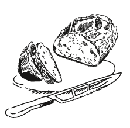

Iglo drops
oferta skierowana do Klientów B2B
Oferta skierowana do Klientów B2B, którzy oczekującą od nas najwyższej jakości standardów obsługi, wykreowania wyjątkowych, dedykowanych wyłącznie dla nich produktów. Odbiorcom tym oferujemy specjalne, obustronnie korzystne warunki współpracy, oraz współdziałanie oparte na zaufaniu i partnerstwie.
Zalety korzystania z naszych rozwiązań w relacjach B2B:
- wykreowanie produktu zgodnego z wymogami i oczekiwaniami Partnerów,
- powtarzalność produktów wysokiej jakości,
- indywidualne podejście do każdego odbiorcy i jego przedsięwzięcia,
- profesjonalna opieka Koordynatora projektu oraz Działu NPD firmy Rudopal,
- korzystne warunki współpracy,
- dogodne terminy realizacji projektów i zamówień,
- wieloletnie i bogate doświadczenie w wytwarzaniu produktów dedykowanych,
- otwartość na inwestowanie w nowe technologie i rozwiązania pod dany kontrakt z naszym Partnerem.
Iglo Dropsy + półprodukt Klienta = gotowe i pyszne danie
Sosy do Makaronów
Sosy do dań mięsnych
Sosy do ryb
i owoców morza

Masełka i nadzienia
smakowe